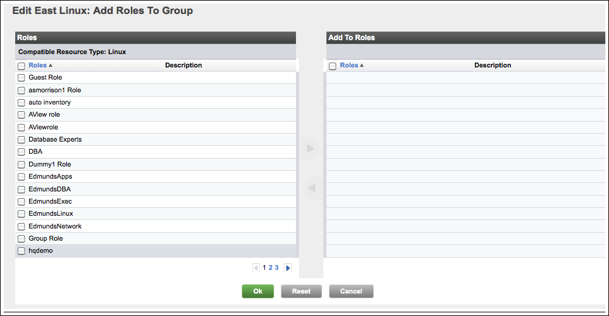

vFabric Hyperic 4.6.5 : Configure and Manage Resource Groups
This page last changed on Jan 04, 2012 by mmcgarry.
Topics marked with * relate to features available only in vFabric Hyperic.
This page has instructions for creating and managing groups.
| Learn About HQApi group Command For information about creating a group using the HQApi see HQApi group command. |
Create a Group
- Click New Group on either:
- The Dashboard's Summary Counts portlet
- The Tools menu on the Browse > Resources page
- The New Group page appears.

- On the New Group page, enter
- Name: The name of the group
- Description: (optional) A description of the group
- Location: (optional) The physical location of the group's hardware
- Make group private: Checkmark to make the group private. A private group is invisible to other users, including admin users. You can share a private group with other users by associating it with a role. Note that the name you assign to a private group is automatically prefixed with the string "private to username", where username is the creator's Hyperic username.
- Contains Resources: Select the type of group:
- Compatible/cluster - the group will contain resources of a single type. For example, "Linux" or "JBoss 4.2"
- Mixed - the group will contain multiple resource types. Mixed groups are useful for role-based resource access control.
- The Select Resource Type pulldown appears to the right of the Contains Resources — the options vary depending upon whether you are created a compatible or mixed group.
- For a compatible group, the Select Resource Type pulldown contains a list of all resource types in inventory, as shown in the screenshot below.

- For a mixed group, the Select Resource Type pulldown contains these choices (as shown in the thumbnail screenshot below):
- Groups
- Platforms, Servers, & Services
- Applications

- For a compatible group, the Select Resource Type pulldown contains a list of all resource types in inventory, as shown in the screenshot below.
- Click OK to create the group.
- The Inventory page for the new group appears. The screenshot below is the Inventory page for a new compatible group.

- The Inventory page for the new group appears. The screenshot below is the Inventory page for a new compatible group.
- Add resources to the new group, following the instructions in Add Resources to a Group
Add Resources to a Group
To add resources to a group:
- Navigate to the group's Inventory page, if it is not currently selected.
- Click Add To List in the Resources section of the page.
- On the Add to Group page, filter the resource list as desired by entering all or a port of the resource name in the Filter By Name field.
- If you are creating a mixed group, a pulldown that allows filtering by resource type as well.

- If you are creating a mixed group, a pulldown that allows filtering by resource type as well.
- Checkmark desired resources and click the blue arrow to move them from the Resources column to the Add Resources column. (The arrow is enabled when you select a resource.)
- After moving desired resources to the Add Resources column, click OK.
Assign Roles to a Group
To add a role to a group:
- Navigate to the group's Inventory page, if it is not currently selected.
- Click Add To List in the Roles section of the page.
- On the Add to Roles toGroup page, checkmark desired roles and click the blue arrow to move them from the Roles column to the Add To Roles column. (The arrow is enabled when you select a role.)
 - After moving desired roles to the Add Resources column, click OK.
Edit a Group's Inventory Properties

Remove Resources from a Group
To remove resources from a group:
- Navigate to the group's Inventory page, if it is not currently selected.
- In the Resources section, checkmark the resources you want to remove.
- Click Remove From List.
Remove Roles from a Group
- Navigate to the group's Inventory page, if it is not currently selected.
- In the Roles section, checkmark the roles you want to remove.
- Click Remove From List.